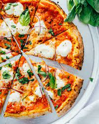

Pizza Recipe

Why Pizza?
What to do when your 8-year old nephew comes to visit? Make pizza, of course!
Ingredients
- tomato sauce
- Fresh soft mozzarella cheese
- Pepperoni
Steps
- Make and knead the pizza dough
- Preheat the pizza stone
- Flatten the dough ball, and stretch out into a round.
- Spread with tomato sauce and sprinkle with toppings
- Slide pizza into the oven for baking